Portfolio
Preserved Memories
A collection of hand-drawn graphite portraits created to capture personality, connection, and the memories that matter most.
Gallery
Celebrating Love
Wedding, anniversary, and couple portraits created to preserve meaningful relationships.

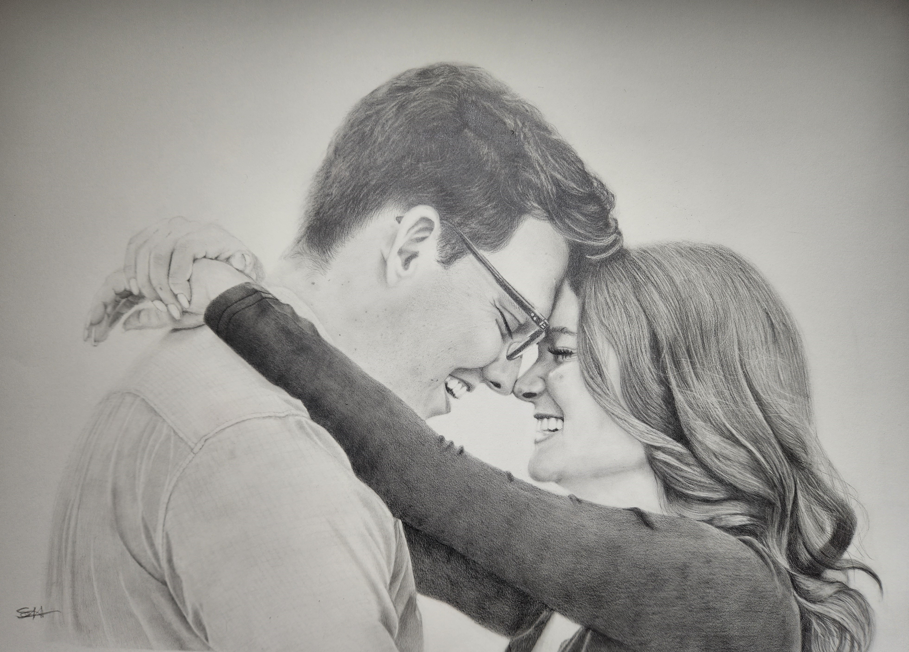
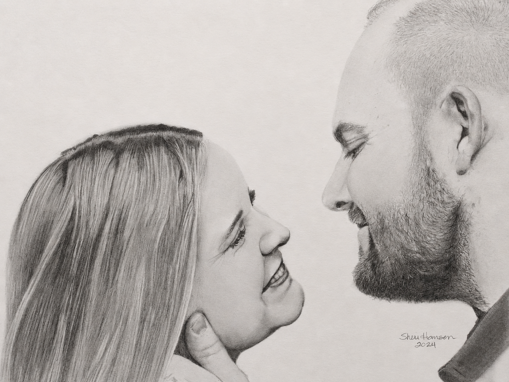
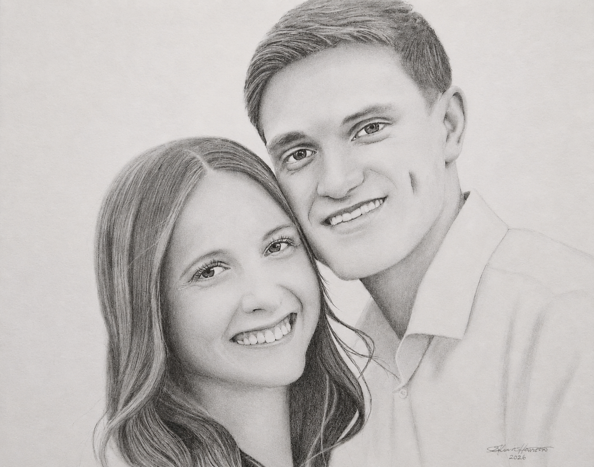

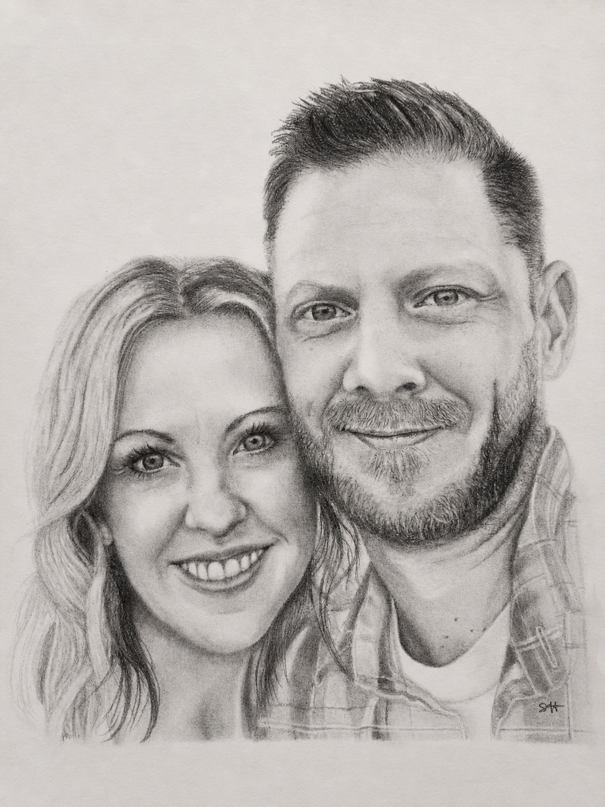
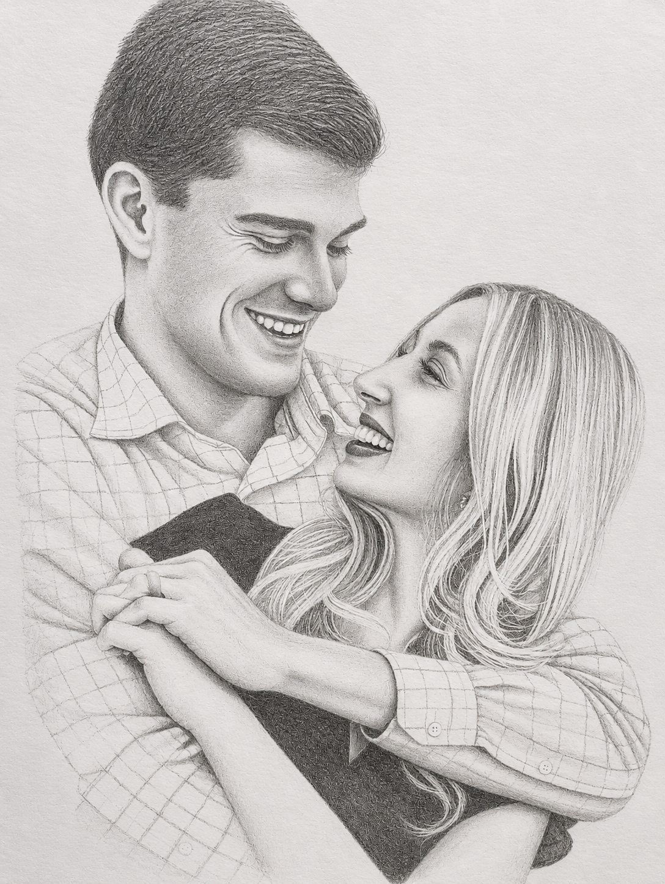
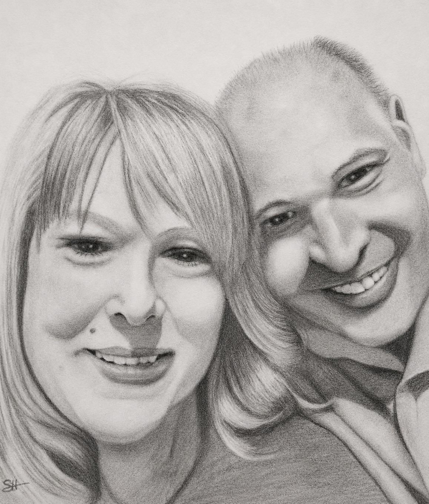
Gallery
Growing Up Too Fast
Portraits of children and teens, preserving the expressions and personality of each season.

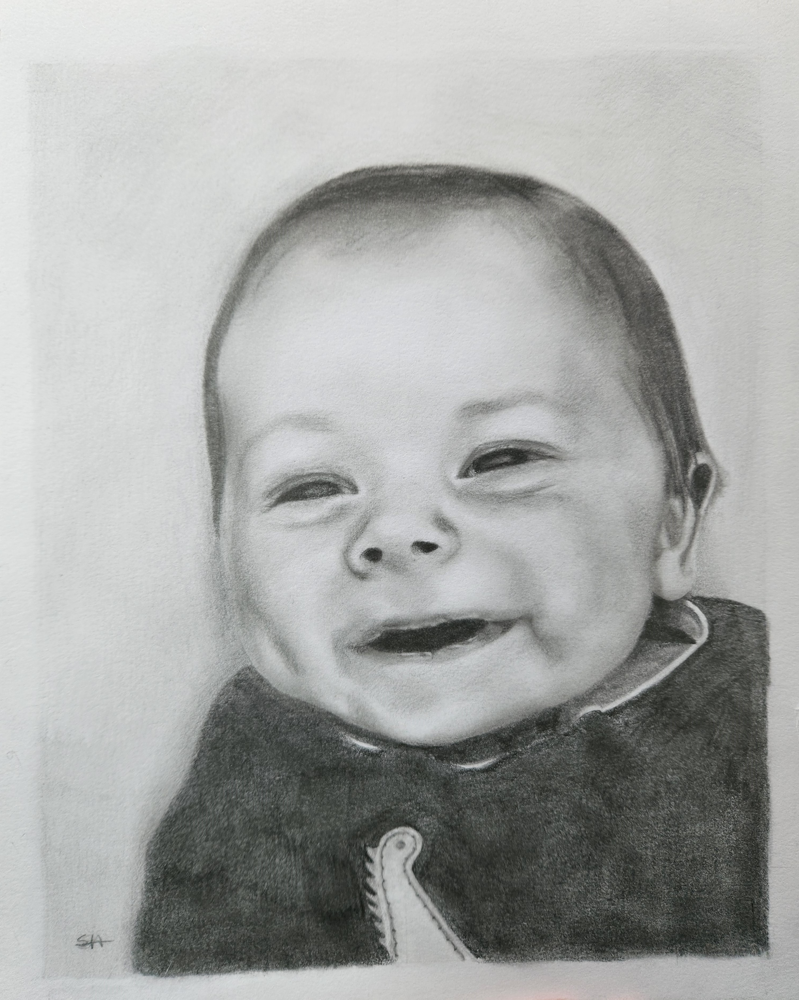
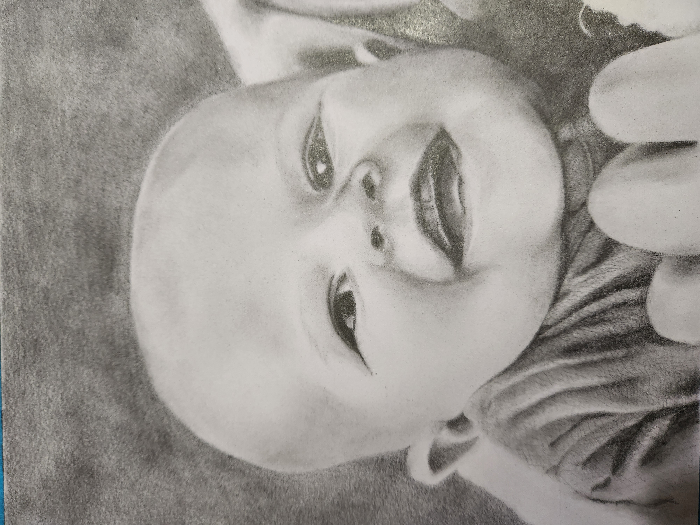
Gallery
In Loving Remembrance
Honoring loved ones through carefully hand-drawn graphite portraits.
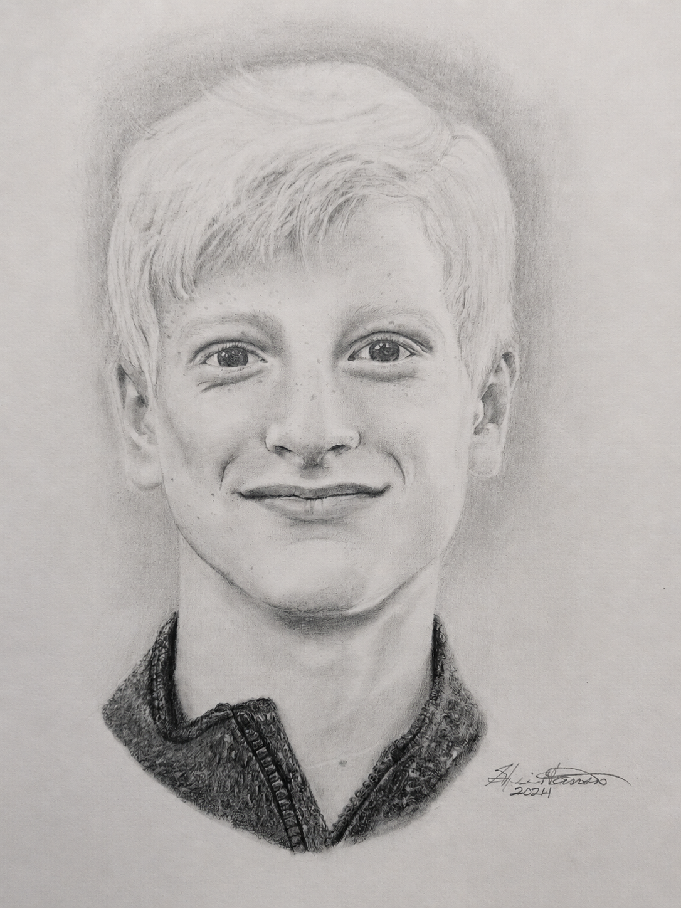
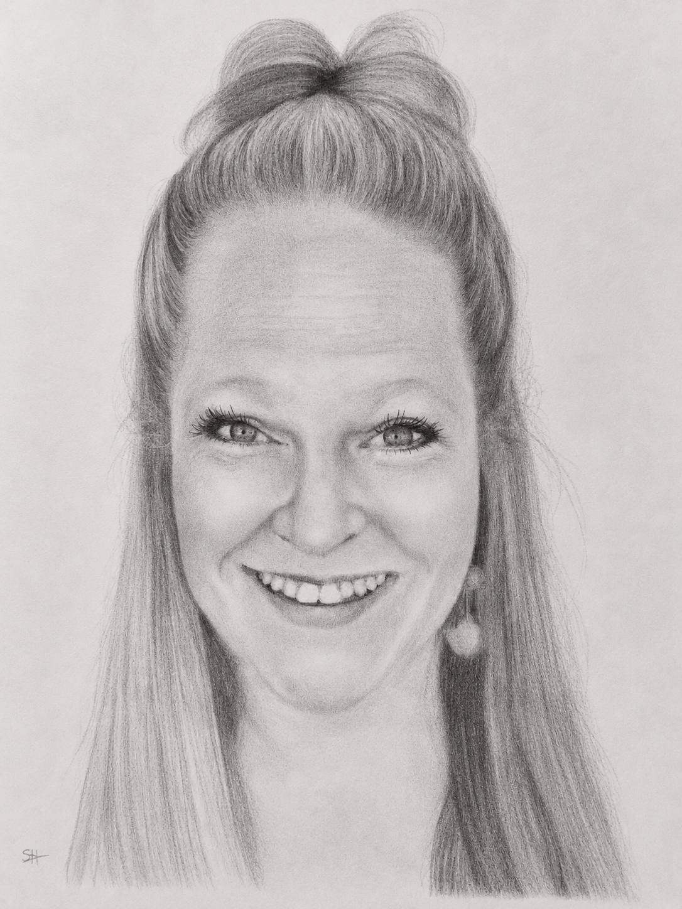
Gallery
Family Connections
Portraits that celebrate siblings, families, and the relationships that shape our lives.

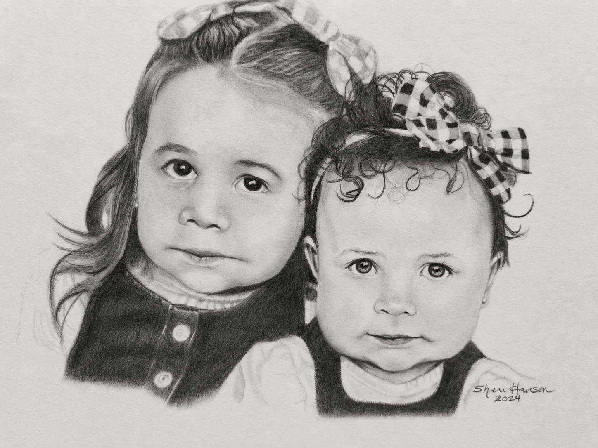